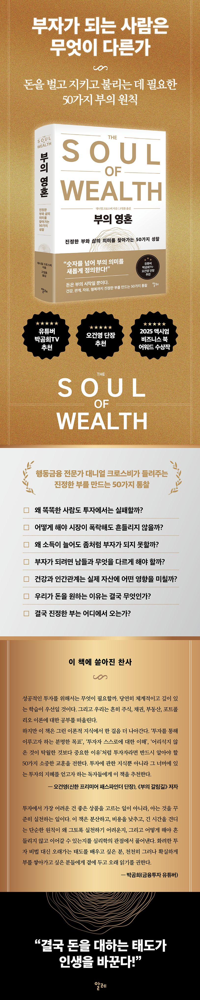

“돈을 대하는 태도가 인생을 바꾼다!”
부자가 되는 사람은 무엇이 다른가
돈을 벌고, 지키고, 불리는 데 필요한 50가지 부의 원칙
누구나 부자가 되고 싶어 한다. 더 높은 연봉을 받고, 더 많은 자산을 모으고, 투자에서 더 높은 수익을 얻어 경제적 자유에 가까워지기를 바란다. 그래서 우리는 오를 주식을 찾고, 시장의 방향을 예측하고, 새로운 투자법을 공부하며, 남들보다 조금이라도 먼저 부자가 될 방법을 찾아 헤맨다.
그런데 정말 그런 것들이 부를 결정할까?
심리학자이자 행동금융 전문가 대니얼 크로스비는 《부의 영혼》에서 우리가 부자가 되는 데 가장 중요하다고 믿어온 것들이 실제로는 그리 중요하지 않을 수 있다고 말한다. 시장을 정확하게 예측하는 능력, 최고의 종목을 골라내는 안목, 남들보다 뛰어난 금융 지식보다 훨씬 더 큰 차이를 만들어내는 것들이 있다는 것이다.
실제로 전문가조차 시장을 지속적으로 이기기 어렵다. 반면 자신의 능력에 투자하고, 큰 재무적 실수를 피하고, 꾸준히 저축하고 투자하는 것, 건강을 관리하고, 좋은 사람과 관계를 맺는 것, 자신의 시간을 스스로 통제하는 것. 얼핏 돈과 직접적인 관련이 없어 보이는 이런 선택들이 수십 년 쌓이면서 한 사람의 부를 결정한다.
결국 부를 결정하는 것은 ‘대박 투자’ 한 번이 아니라 돈을 둘러싼 수많은 선택의 결과다.
《부의 영혼》은 바로 그 선택에 관한 책이다.

이 책에서 말하는 ‘영혼’은 강렬한 에너지와 감정을 뜻한다. 특히 예술 작품이나 표현을 통해 드러나지만, 그것은 우리의 삶 전반에도 스민다.
돌아보지 않으면, 얄팍한 부의 추구가 돈의 본질을 앗아갈 수 있다. 그러나 깊이 있는 자기 성찰을 하고, 새로운 삶의 방식을 시도하며, 영혼 있는 삶을 지향할 때, 돈은 본래 의도된 대로 삶을 바꾸는 도구가 될 수 있다. 나는 이 책이 당신의 생각을 흔들고, 잊었던 진리를 깨우며, 돈과 더 솔직하고 살아 있는 관계를 맺게 해주길 바란다. -8~9쪽
진짜 부는 결승선의 숫자가 아니라, 그 너머에서 시작된다. 진정한 부는 우리가 가진 물질적 풍요를 더 오래가는 만족과 충만으로 잇는 데서 나온다. 돈은 아이스크림 같은 소소한 즐거움(긍정적 감정), 사랑하는 이들과의 여행 같은 추억(관계), 종교나 정신적·정치적 활동에 참여할 자유(의미)를 우리에게 선사할 수 있다. 이 모든 것은 실제로 우리의 행복을 북돋아준다.
그러나 부를 그 자체의 목적처럼 끝없이 좇으면서 다른 행복의 요소들을 희생한다면, 역사와 행동과학이 말해주듯 인생은 텅 비어버리고 영혼은 메말라갈 것이다. -22쪽
투자란 시장을 이기는 것이 아니다. 그것은 우리가 해결해야 할 올바른 문제가 아니다. 투자란 재정적, 그리고 개인적 자유를 확보하는 수단일 뿐이다. 자유의 정의가 사람마다 다를 수는 있어도 말이다. 시장과 우리의 포트폴리오는 온통 수익률이라는 숫자로 도배되어 있기 때문에 사람들은 서로를 비교하고 더 높은 수익률을 좇느라 기를 쓴다.
그러나 대부분의 평범한 사람들에게 벤치마크를 이기고 수익을 극대화하려 애쓰는 것보다 자신의 목표와 가치에 맞춰 주식과 채권의 비율을 정하고, 단순한 자산 배분을 유지하는 것이 훨씬 더 현명하다. -59쪽
돈과 꿈을 연결하면 저축과 투자가 더는 의무가 아니다. 동기가 된다. 게다가 목표 기반 투자(Goals-Based Investing, GBI)는 실제로 더 큰 부를 만들어낸다는 사실이 연구로 증명됐다.
2014년, 모닝스타(Morningstar)의 은퇴 연구 책임자였던 데이비드 블란쳇(David Blanchett)은 목표 기반 투자를 활용한 재무설계가 고객 자산을 평균 15% 이상 늘려준다고 밝혔다. 단순히 수익률 같은 성과 기준에 맞추는 것보다 개인의 목표를 중심에 두었을 때 투자자의 만족도도 훨씬 높아졌다.
목표를 ‘인간적’이고 직관적으로 만들수록 효과는 더욱 커진다. 2009년, 치마(Cheema)와 소만(Soman)의 연구는 돈을 여러 항목으로 나누고, 항목마다 가족 사진처럼 저축의 목적을 떠올리게 하는 시각적 단서를 함께 제시했더니 단순 관리 집단에 비해 저축률이 거의 2배 가까이 증가했다고 밝혔다. -79쪽
많은 이들이 저축과 투자를 그저 ‘해야 하니까’ 한다. 물론 시간이 지나면서 순자산이 늘어나는 모습을 보는 것은 즐겁다. 하지만 단순한 숫자를 넘어, 당신의 돈은 어떤 목적을 위해 존재하는가? 당신에게는 어떤 책임이 있는가?
나는 모든 독자의 상황마다 정답을 대신 줄 수 없다. 그 답은 밖에 있지 않다. 프랭클이 말했듯, 결국은 자기 안으로 깊이 들어가 스스로의 ‘이유’를 찾아야 한다. 그 ‘왜’가 있을 때만 당신의 돈은 단순한 숫자가 아니라 삶을 지탱하는 힘이 된다. -82쪽
금융시장도 똑같다. 불확실성이 커지면 사람들은 안전하다고 믿는 현금으로 몰려든다. 2008년 글로벌 금융위기가 대표적인 사례다. 미국 투자회사협회(Investment Company Institute, ICI)에 따르면, 2006년 말 25%도 안 되던 현금 비중이 2009년 초 주식시장이 바닥을 칠 무렵에는 50% 가까이 치솟았다. 시장 변동성이 커지면 ‘안전 자산으로 대탈출’이 이어지기 때문이다. 이후 S&P500 지수가 회복하자 그 돈은 다시 위험 자산으로 흘러들어갔다. 사람들은 장기적으로 더 큰 대가를 치를지라도 당장의 확실성을 더 선호하는 경향이 있음을 보여준다. -86쪽
기대치 또한 바로잡아야 한다. 《돈의 심리학》의 저자 모건 하우절(Morgan Housel)은 변동성을 ‘야구 경기 입장권’에 비유했다. 주식시장이라는 경기장에 들어가기 위해서는 입장료를 내야 하는데, 그게 바로 변동성이라는 것이다. 약세장, 조정, 장기간의 높은 변동성은 시장의 본질이다. 이러한 등락을 자연스런 현상으로 이해하면 불시에 맞닥뜨린 충격에서 훨씬 빨리 회복할 수 있다. -87쪽
더 길게 말할 수도 있지만 이제 감이 충분히 잡혔을 것이다. 당신이 맺은 모든 의미 있는 관계, 도전, 목표에는 크든 작든 위험이 있었다. 시장과 투자의 세계도 다르지 않다. 하루아침에 백만장자가 되는 일은 드물다. 단 한 해에 엄청난 고소득을 올린다고 해서 가능한 일도 아니다. 대부분의 백만장자는 수십 년에 걸쳐 꾸준히 늘어나는 소득을 바탕으로, 일정 비율을 저축하고 투자하며, 고정비를 관리하고, 남과 비교하는 함정에서 자유로워짐으로써 재정적 성공에 이른다. -101쪽
이런 원칙은 돈 문제에도 그대로 적용된다. 왜냐하면 보조금 신청이나 벤처 투자에서 그렇듯, 금융 생활에서도 실수와 손실은 게임의 일부이기 때문이다. 이를 피하려 하지 말고, 마땅히 일어날 일로 받아들여야 한다. 실제로 주식시장의 역사를 보자. 자산 증식의 최강 수단 중 하나라고 할 수 있는 S&P500 지수조차 1928년 이후 약 4년 중 1년꼴로 연간 20% 이상 하락했다는 데이터를 벤 칼슨이 제시했다. 주식시장 역사 속에 큰 폭락은 결코 예외가 아니라 반복되는 현실이었다. 단기적으로 보면, 하루 장 마감 시점에 시장이 하락해 화면이 파랗게 물들 확률은 약 45%다. 이런 하락일을 피하려 애쓰다가는 오히려 더 큰 손실을 맞게 된다. 그래서 전체 데이 트레이더의 80%가 2년 안에 시장을 떠나는 것이다 -117쪽
그렇다면 이 모든 이야기가 당신의 돈과 무슨 관련이 있을까? 심리적으로 우리는 저축과 투자, 즉 부를 쌓는 핵심 행동을 현재의 손실로 인식한다. 미래를 위해 돈을 따로 떼어두는 일은 마음속에서 마치 돈을 불태우는 것과 비슷하게 다가온다. 당장 새 물건을 사거나 재미있는 활동을 즐기는 짜릿함을 포기하고, 불확실한 미래의 이익을 선택하는 일은 그만큼 불쾌하게 느껴진다. -142쪽
투자자도 똑같다. 예를 들어, 갑자기 큰 유산을 받았을 때 당장 투자하기를 망설이는 경우가 많다. 손실에 대한 두려움은 심리적 함정을 잘 아는 사람조차도 얼어붙게 만든다. 설렘과 불안이 뒤섞여 그 돈을 언제 어떻게 굴려야 할지 망설이게 되는 것이다. 시장이 출렁일 때는 현금을 그대로 두는 것이 가장 안전해보이고, 주가가 오른 뒤에는 이미 늦었다는 생각이 든다.
이럴 때야말로 금융 전문가의 역할이 빛을 발한다. 그들은 사람들이 ‘최적의 순간’을 기다리려는 본능을 인정하면서도 동시에 그 순간이 결코 오지 않는다는 사실을 깨닫게 해준다. 두려움을 직시하면서도 행동하도록 이끄는 것이다.
시장은 늘 두려워할 이유를 만들어낸다. 모든 자산을 팔아 현금으로 들고 있어야 할 이유도, 새로 생긴 현금을 투자하지 말아야 할 이유도 언제나 등장한다. -154~155쪽
우리 모두의 재정적 미래도 마찬가지다. 어린 시절의 돈 이야기나 과거의 실수에 묶일 때, 재정적 미래는 심각하게 손상된다. 매일의 분주함에 파묻혀, 고개를 들어 수평선 너머의 가능성을 상상조차 하지 못한다면 우리의 재정적 미래는 스스로 무너진다.
돈과 관련된 미래를 생생하게 그려보는 일은 허황된 비전 보드 놀이가 아니다. 실제로 의사 결정을 단순화하고, 행동을 촉발하는 입증된 방법이다. -
저자(글) Daniel Crosby
심리학자이자 행동금융 전문가로, 인간의 마음과 금융시장이 만나는 지점을 연구하며, 행동과학을 투자와 자산관리 분야에 적용해왔다.
브리검영 대학교와 에모리 대학교에서 공부했으며, 〈뉴욕타임스〉 베스트셀러 작가로 《결국 부자가 되는 사람들의 원칙》, 《제3의 부의 원칙》, 《부의 영혼》은 모두 액시엄 비즈니스 북 어워드(Axiom Business Book Awards) 투자 분야 수상작으로 선정되었다. 세계 각지에서 강연하며 인간의 심리가 금융시장에 미치는 영향과 행동금융에 기반한 투자 원칙을 전하고 있다. 또한 다양한 매체를 통해 투자와 시장심리에 대한 통찰을 꾸준히 소개하고 있으며, 행동금융 분야를 대표하는 전문가로 평가받고 있다.
세 아이의 아버지인 그는 미국 프로야구 세인트루이스 카디널스의 열성 팬이며, 미국 남부를 여행하는 것을 즐긴다. 필리핀의 음식과 문화, 언어에도 깊은 관심을 가지고 있다